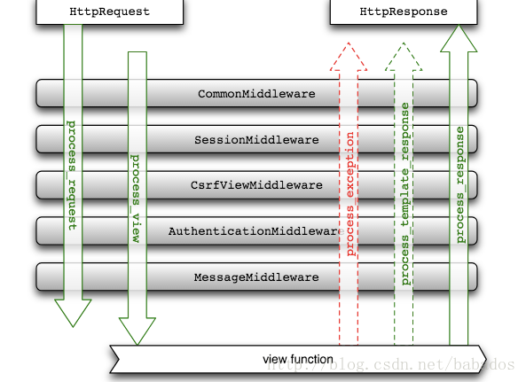

1.中间件
判断登陆及权限，做IP拦截，客户端设备识别，过滤恶意请求
官方说法：中间件是一个用来处理Django的请求和响应的框架级别的钩子。它是一个轻量、低级别的插件系统，用于在全局范围内改变Django的输入和输出。每个中间件组件都负责做一些特定的功能。说的真实点，其实中间件就是帮助我们在视图函数执行之前和执行之后都可以做一些额外的操作，它本质上就是一个自定义类，类中定义了几个办法，Django框架会在请求的特定的时间去执行这些方法。
在Django中，其实我们一直都在使用中间件，在Django项目的settings.py文件中，有一项就是中间件的配置：MIDDLEWARE。是一个列表，列表中是一个个字符串，这些字符串其实一个个类，也就是一个个中间件。
中间件可以定义五个方法，分别是：（主要的是process_request和process_response）
- process_request(self,request)
- process_view(self,request,view_func,view_args,view_kwargs)
- process_template_response(self,request,response)
- process_exception(self,request,exception)
- process_response(self,request,response)
以上方法的返回值可以是None或一个HttpResponse对象，如果是None，则继续按照Django定义的规则向后继续执行，如果是HttpResponse对象，则直接将对象返回给用户。
process_reqeusts
- 中间件的process_request方法是在执行视图函数之前执行的。
- 当配置多个中间件时，会按照MIDDLEWARE中的注册顺序，也就是列表的索引值，从前到后依次执行的。
- 不同中间件之间传递的request都是同一个对象
process_response
1.它有两个参数，一个是request，一个是response，request就是上述例子中一样的对象，response是视图函数返回的HttpResponse对象。该方法的返回值也必须是HttpResponse对象。
2.process_response方法是在视图函数之后执行的，并且顺序是MD1比MD2先执行。(此时settings.py中 MD2比MD1先注册)
3.多个中间件中的process_response方法是按照MIDDLEWARE中的注册顺序倒序执行的，也就是说第一个中间件的process_request方法首先执行，而它的process_response方法最后执行，最后一个中间件的process_request方法最后一个执行，它的process_response方法是最先执行。
process_view
process_view(self, request, view_func, view_args, view_kwargs)
该方法有四个参数
request是HttpRequest对象。
view_func是Django即将使用的视图函数。 （它是实际的函数对象，而不是函数的名称作为字符串。）
view_args是将传递给视图的位置参数的列表.
view_kwargs是将传递给视图的关键字参数的字典。 view_args和view_kwargs都不包含第一个视图参数（request）。
它应该返回None或一个HttpResponse对象。 如果返回None，Django将继续处理这个请求，执行任何其他中间件的process_view方法，然后在执行相应的视图。 如果它返回一个HttpResponse对象，Django不会调用适当的视图函数。 它将执行中间件的process_response方法并将应用到该HttpResponse并返回结果。
process_view方法是在process_request之后，视图函数之前执行的，执行顺序按照MIDDLEWARE中的注册顺序从前到后顺序执行的。
process_exception
process_exception(self, request, exception)
该方法两个参数:
一个HttpRequest对象
一个exception是视图函数异常产生的Exception对象。
这个方法只有在视图函数中出现异常了才执行，它返回的值可以是一个None也可以是一个HttpResponse对象。如果是HttpResponse对象，Django将调用模板和中间件中的process_response方法，并返回给浏览器，否则将默认处理异常。如果返回一个None，则交给下一个中间件的process_exception方法来处理异常。它的执行顺序也是按照中间件注册顺序的倒序执行。
如果视图函数中无异常，process_exception方法不执行。
process_template_response
process_template_response(self, request, response)
它的参数，一个HttpRequest对象，response是TemplateResponse对象（由视图函数或者中间件产生）。
process_template_response是在视图函数执行完成后立即执行，但是它有一个前提条件，那就是视图函数返回的对象有一个render()方法（或者表明该对象是一个TemplateResponse对象或等价方法）。
视图函数执行完之后，立即执行了中间件的process_template_response方法，顺序是倒序，先执行MD1的，在执行MD2的，接着执行了视图函数返回的HttpResponse对象的render方法，返回了一个新的HttpResponse对象，接着执行中间件的process_response方法。
总结一下：
process_request(self, request)
- 视图函数执行之前（在urls.py找对应关系之前）
- 注册顺序
process_response(self, request, response)
- 视图函数执行之后
- 注册顺序的倒序
process_view(self, view_func, view_args, view_kwargs)
- 视图函数执行之前（在urls.py中找到对应关系之后）
此时view_func就是将要执行的视图函数对象！！！ - 注册顺序
- 视图函数执行之前（在urls.py中找到对应关系之后）
process_exception(self, request, exception)
- 视图函数执行之后，只有在有异常的时候才执行
- 注册顺序的倒序
process_template_response(self, request, response)
- 视图函数执行之后，只有在响应对象有render方法的时候才执行
- 注册顺序的倒序

1 | # 中间件认证登陆 |
- 设置header
1 | response["Set-Token"] = '' |